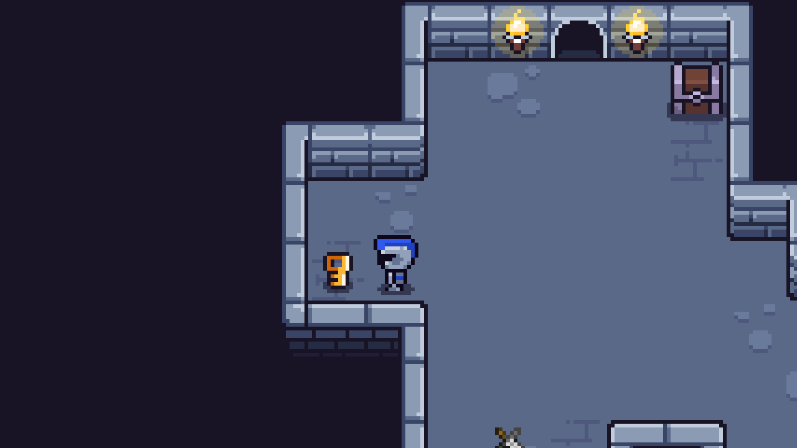
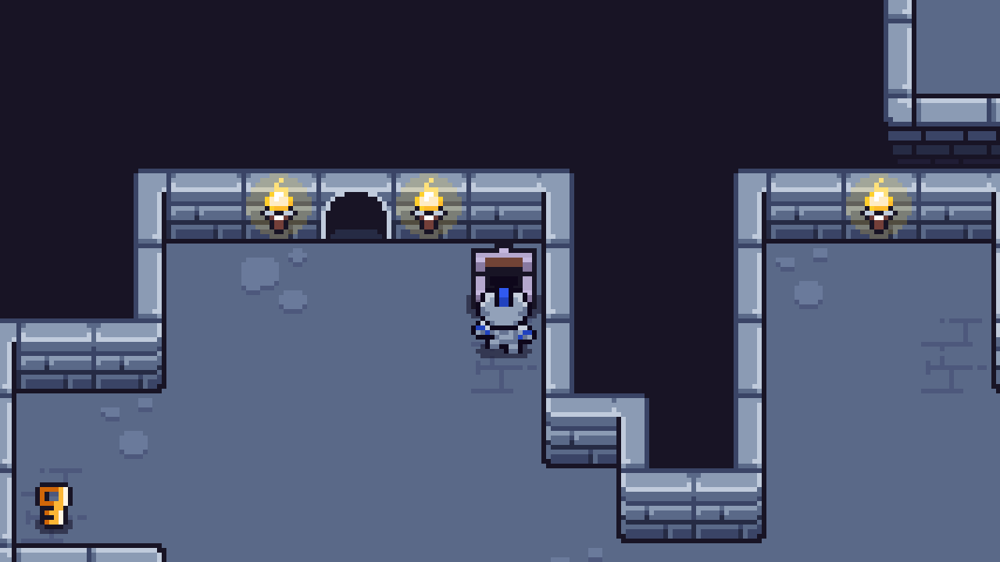
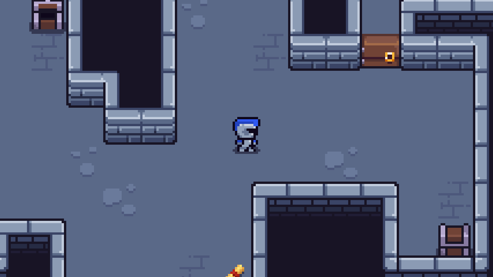
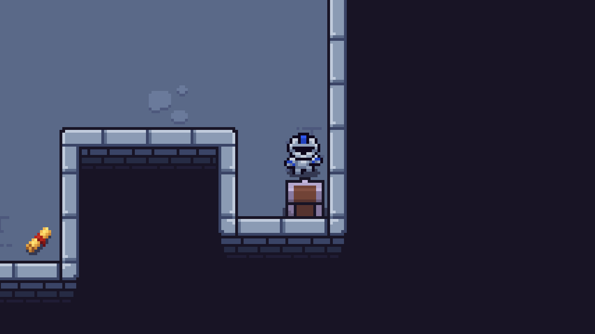
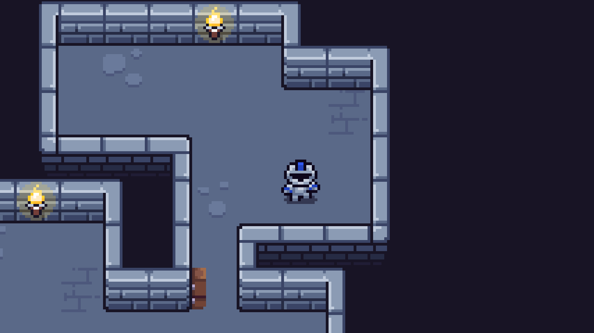

About game
– Kingdom of the Dead is an immersive game inspired by the atmosphere
of ancient castles, their former glory, and their current haunting decay.
Fight for survival, uncover mysteries, and discover new opportunities.
* The game is in early access. You can report bugs and issues on the
Bug Reports page — this helps us fix them faster. Thank you for your support!
Screenshot gallery




